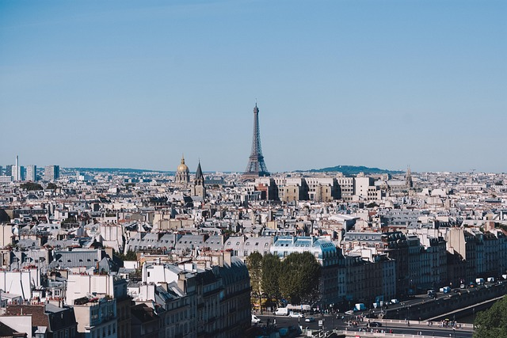

Rendkívül sokszínűek: a történelmi metropoliszoktól a modern, élhető zöldvárosokig terjed a skála. Az alábbiakban csoportosítva, a legfontosabb jellemzőikkel mutatjuk be a legjelentősebbeket.

Érdekességek
Párizs (Franciaország): A belvárosi utcákon egyetlen egy darab STOP tábla sem található, mivel a kereszteződésekben a hagyományos jobbkéz-szabály érvényes.
London (Egyesült Királyság): A híres Big Ben név hivatalosan nem magára az óratoronyra, hanem a toronyban lévő 13,7 tonnás harangra vonatkozik.
Róma (Olaszország): Itt található a Vatikán, amely a világ legkisebb önálló állama, a városon belül pedig több mint 900 templom és 280 szökőkút kapott helyet.
Európa fővárosai rendkívül sokszínűek, történelmi múltjuk, földrajzi elhelyezkedésük és méretük alapján is egyedülálló jellemzőkkel bírnak.
A kontinens több mint 40 fővárosa között egyaránt megtalálhatók a világpolitikai és gazdasági központok, valamint a parányi törpeállamok székhelyei is.